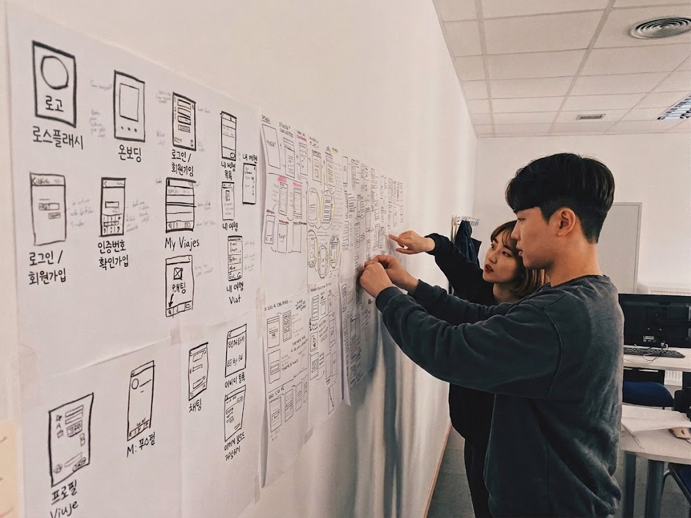
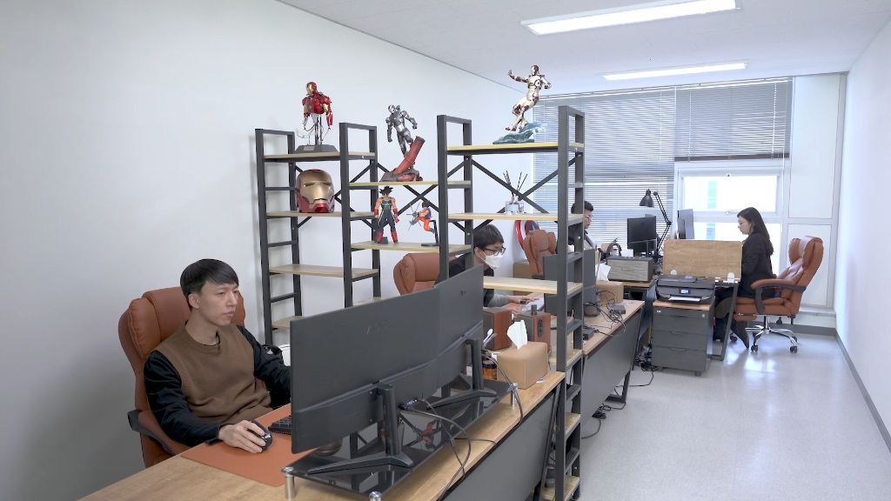
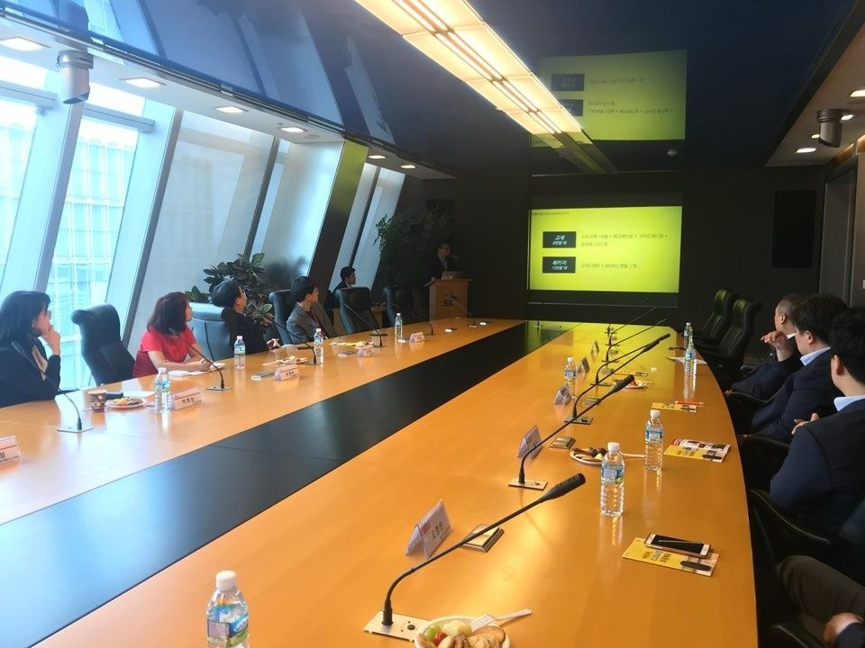
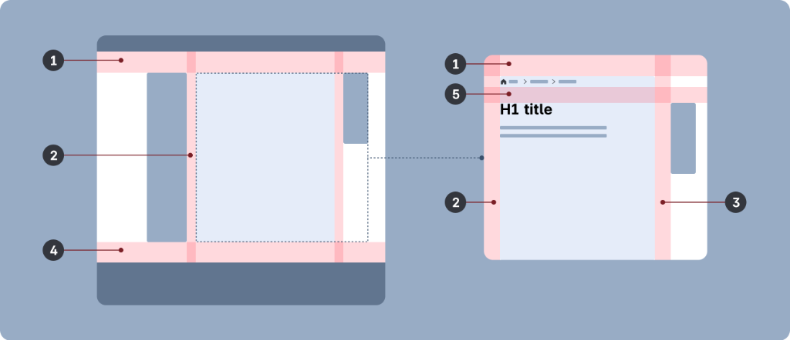
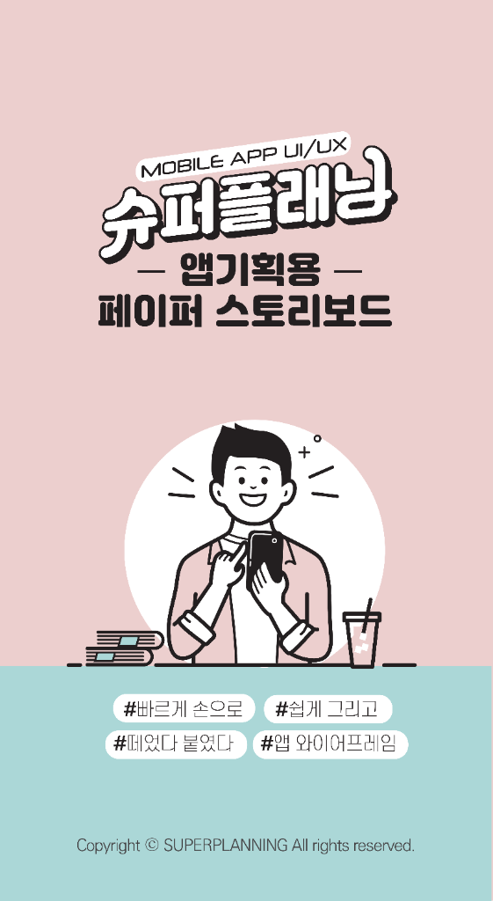
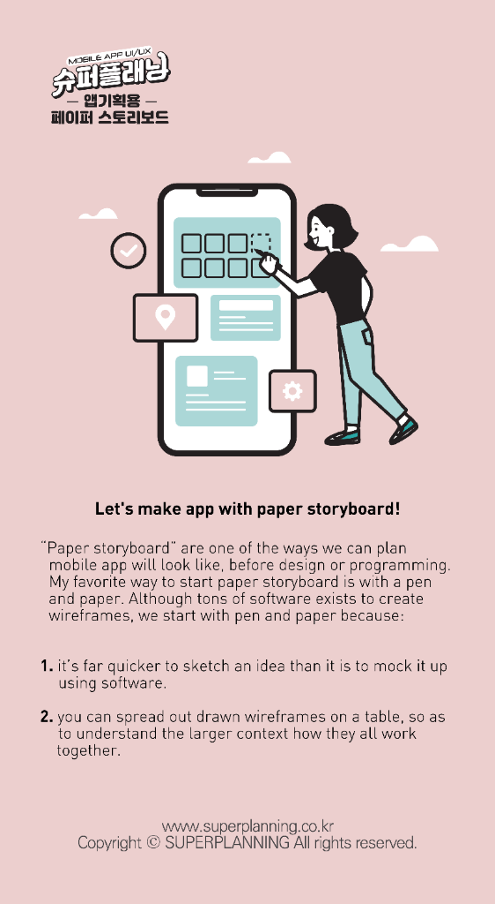
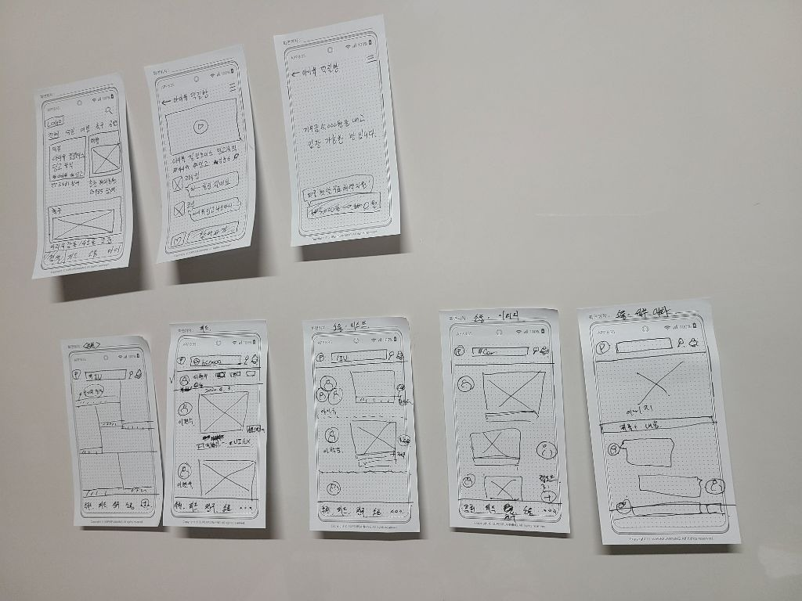
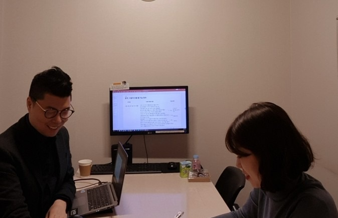
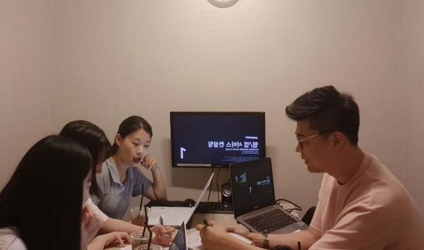
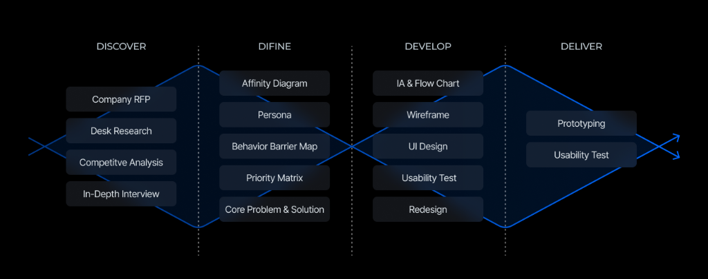

UI/UX기획 및 디자인
슈퍼플래닝은 비즈니스 목표와 사용자 경험을 연결하여 성공적인 모바일 앱과 웹 UI/UX를 설계합니다.
-
사용자에 집중한 UX:
화려함보다는 사용자가 헤매지 않고 목적지에 도달하는 실용적인 UI를 만듭니다.
-
올인원 UX:
리서치 기반의 구조 설계부터 정교한 UX라이팅, IA, 사용자플로우, 와이어프레임, 스토리보드, AI활용 프로토타입까지 통합적인 관점으로 접근합니다.
-
개발 밀착형 산출물:
기획자와 개발자 간의 간극을 없애는 실무 UI화면설계서로 프로젝트의 성공률을 높입니다.

슈퍼플래닝은 아이디어만 제안하는 조직이 아니라 실제 프로젝트 문서를 만들고, 화면 구조를 정리하고, 개발 연계까지 검토하는 실무형 UX 팀입니다. 상단 이미지는 그러한 업무 환경과 실행 중심의 프로젝트 운영 방식을 보여줍니다.
1. UX기획 및 UX디자인
웹/앱 UX기획은 좋은 사업 아이디어를 실제 사용 가능한 서비스 구조로 바꾸는 과정입니다. 어떤 화면이 먼저 나와야 하는지, 사용자가 어디에서 가입하고 어떤 정보를 입력하며 어디에서 이탈하는지, 핵심 기능은 어떤 순서로 배치되어야 하는지까지 미리 설계해야 개발이 흔들리지 않습니다. UX디자인은 이 기획 구조를 사용자가 이해하기 쉬운 화면 경험으로 정리하는 단계입니다.
코로나 이후 거의 모든 산업이 디지털 접점을 기본으로 가지게 되면서 모바일앱과 웹서비스의 중요성은 더 커졌습니다. 하지만 기능만 많은 서비스가 곧 좋은 서비스는 아닙니다. 특히 예산과 시간이 제한된 스타트업, 예비창업자, 소규모 비즈니스일수록 처음부터 사용성 기준으로 구조를 잡지 않으면 개발비를 쓰고도 고객에게 외면받는 일이 자주 발생합니다.

슈퍼플래닝은 바로 이 지점을 해결하는 데 초점을 둡니다. 모바일앱 IT 기능 구현보다 먼저 사용자의 이해, 행동, 전환을 설계하고, 리서치에서 확인한 문제를 IA와 화면 흐름에 반영하며, 이후 UX라이팅과 개발 커뮤니케이션까지 끊기지 않게 연결합니다. 즉, UX기획은 보기 좋은 시안을 만드는 일이 아니라 수익과 직결되는 사용 경험의 뼈대를 설계하는 일에 가깝습니다.
서비스 구조 설계
메뉴 체계, 정보 우선순위, 핵심 기능 동선, 가입·조회·결제 같은 주요 흐름을 먼저 정리해 서비스의 골격을 만듭니다.
사용성 중심 화면 설계
화면별 목적과 입력 방식, 버튼 위치, 안내 문구, 예외 흐름을 검토해 사용자가 덜 헷갈리고 더 빠르게 행동하도록 돕습니다.
실행 가능한 문서화
기획안을 실제 개발과 운영에 전달할 수 있도록 IA, 와이어프레임, 화면설계서, UX라이팅 기준까지 실무 문서로 정리합니다.
슈퍼플래닝은 모바일앱 UX기획을 소수 전문가만 아는 영역으로 보지 않습니다. 누구나 사업 아이디어를 구조화하고 사용자 관점에서 검토할 수 있어야 한다는 관점으로 스타트업 대표, 예비창업자, IT 비전공자에게 UX기획 강의와 앱 컨설팅을 지속해 왔고, 이러한 교육 경험이 실제 프로젝트 설계 방식에도 반영됩니다.
2. 핵심산출물: 화면기획서, 디자인가이드
UX기획의 핵심은 문서를 많이 만드는 것이 아니라 개발과 디자인, 운영팀이 같은 기준으로 움직일 수 있게 구조를 명확히 잡는 데 있습니다. 그래서 슈퍼플래닝의 핵심산출물은 단순한 화면 예시 몇 장이 아니라 전략 수립, 정보 구조 설계, 상세 화면 설계까지 이어지는 실무 문서 체계로 구성됩니다. 각 산출물은 따로 놀지 않고, 앞 단계에서 도출한 인사이트가 다음 단계 설계 문서로 자연스럽게 이어지도록 정리합니다.
UX기획 산출물 제공 범위
1. 전략 수립 및 사용자 분석
제공 산출물
- UX 리서치 리포트
- 페르소나
- 사용자 여정 지도
- 아하순간/아하순간 지표 정의

UX 리서치 리포트는 FGI, IDI, UT 등을 통해 도출된 핵심 인사이트 및 가설 검증 결과서입니다. 사용자가 무엇을 좋아하는지보다 어디에서 멈추고, 왜 이탈하고, 어떤 기대를 가지고 들어오는지까지 실무 의사결정에 필요한 근거를 정리합니다.
페르소나는 리서치 데이터를 바탕으로 정의된 핵심 타겟 사용자 모델화 문서입니다. 막연한 고객상이 아니라 행동 패턴, 목표, 불편, 디지털 사용 맥락을 기준으로 정리해 이후 화면 우선순위와 기능 배치의 기준점으로 삼습니다.
사용자 여정 지도는 사용자가 서비스를 경험하는 전 과정을 시각화하여 페인포인트를 도출한 지도입니다. 유입, 탐색, 가입, 사용, 재방문 과정에서 어떤 심리 변화와 마찰이 발생하는지 흐름 단위로 확인할 수 있어 UX 개선 포인트를 찾는 데 유용합니다.
아하순간/아하순간 지표 정의는 사용자가 서비스의 가치를 분명히 체감하는 순간이 언제인지 정리하고, 그 순간을 수치로 추적할 수 있는 기준을 세우는 문서입니다. 단순 방문 수보다 가입 완료, 첫 핵심 기능 실행, 재방문, 결제 전환 같은 실제 의미 있는 행동을 정의해 제품팀이 같은 목표를 보도록 돕습니다. 즉 무엇을 잘 만들 것인가뿐 아니라 어떤 행동을 성공으로 볼 것인지 기준을 세워 기획과 비즈니스 목표를 연결합니다.
2. 정보 구조 및 서비스 흐름 설계
제공 산출물
- IA 설계
- 사용자 플로우차트
- 기능정의서
- UX 라이팅 가이드
IA 설계는 웹·앱의 전체 메뉴 구조 및 화면 뎁스를 정의한 정보 구조도입니다. 기능이 많아질수록 사용자는 길을 잃기 쉬우므로, 무엇을 먼저 보여주고 어떤 관계로 묶을지 정보의 위계를 먼저 설계합니다.
사용자 플로우차트는 사용자가 특정 목적을 달성하기 위해 거치는 화면 이동 경로를 도식화한 흐름도입니다. 가입, 조회, 예약, 결제, 설정 같은 핵심 과업에서 어떤 분기와 예외가 생기는지 미리 확인해 불필요한 단계와 이탈 구간을 줄입니다.
기능정의서는 화면별로 요구되는 기능과 예외 처리 정책 등을 상세하게 명세한 문서입니다. 버튼을 누르면 무엇이 일어나야 하는지, 어떤 조건에서 경고가 떠야 하는지, 데이터가 없을 때 무엇을 보여줘야 하는지까지 개발 관점으로 풀어 적습니다.
UX 라이팅 가이드는 브랜드 보이스앤톤, 일관된 용어 사전, UI 텍스트 작성 규칙 등을 담은 가이드라인입니다. 같은 기능도 문구에 따라 이해도와 전환이 달라지기 때문에, 화면 구조와 문장 기준을 같이 잡아야 서비스 경험이 안정됩니다.
3. 구체화 및 상세 화면 설계
제공 산출물
- 와이어프레임
- 사용자 별 스토리보드
- 관리자 스토리보드
- 인터랙션 프로토타입
와이어프레임은 화면의 레이아웃과 정보 배치를 시각적으로 구체화한 설계 도면입니다. 초기에는 구조와 우선순위를 빠르게 검토하고, 이후에는 실제 구현에 가까운 수준까지 정교화해 팀 간 오해를 줄입니다.
사용자 별 스토리보드는 일반 유저가 보는 화면의 UI 요소, 인터랙션, 데이터 연동 방식을 명시한 프론트엔드 개발용 문서입니다. 어떤 버튼이 어떤 조건에서 노출되고 다음 화면으로 어떻게 이동하는지 사용자 관점 흐름을 기준으로 설명합니다.
관리자 스토리보드는 서비스 운영자 및 관리자가 사용하는 백오피스 화면과 통계, DB 권한 등을 명시한 백엔드 개발용 문서입니다. 실제 운영 효율을 좌우하는 영역이기 때문에 일반 사용자 화면만큼 구조적으로 설계하는 것이 중요합니다.
인터랙션 프로토타입은 실제 서비스와 유사하게 클릭 및 화면 전환을 테스트할 수 있는 검증용 시뮬레이션 산출물입니다. 정적인 문서만으로 확인하기 어려운 과업 흐름과 전환감을 사전에 검토할 수 있어 개발 전 합의 도구로도 효과적입니다.
UX디자인 산출물 제공범위
4. UX기획 기반 GUI디자인
제공 산출물
- 디자인 시스템
- 스타일 가이드 및 UI 키트
- 고해상도 최종 화면 디자인
- 인터랙티브 프로토타입
디자인 시스템은 컬러, 타이포그래피, 버튼 등 UI 컴포넌트의 시각적 규격과 상태별 작동 원칙을 체계적으로 문서화하여 서비스 전체의 일관성을 통제하는 최상위 디자인 기준입니다.
스타일 가이드 및 UI 키트는 디자인 시스템을 바탕으로 피그마 내에서 즉시 복사하여 조립할 수 있도록 아이콘, 입력창, 탭 등의 시각 요소들을 재사용 가능한 컴포넌트 형태로 묶어둔 실무 에셋 라이브러리입니다.
고해상도 최종 화면 디자인은 뼈대만 있는 와이어프레임 위에 실제 사용자에게 배포될 수준의 정교한 픽셀 간격, 색상 톤, 이미지 등을 완벽하게 입혀낸 최종 시각 화면 산출물입니다.
인터랙티브 프로토타입은 피그마의 프로토타이핑 기능을 활용해 정적인 화면에 탭, 스와이프, 팝업 애니메이션 등을 적용하여, 실제 앱처럼 터치하고 동작을 검증할 수 있도록 만든 시뮬레이션 결과물입니다.

초기 기획 단계에서는 피그마, AI 등 복잡한 툴보다 직접 소통하며 빠르게 손으로 그리고 수정할 수 있는 아날로그 방식이 오히려 효율적일 때가 있습니다. 슈퍼플래닝은 자체 제작한 앱기획용 페이퍼 스토리보드를 활용해 핵심 화면 구조를 빠르게 스케치하고, 사용자 흐름과 화면 순서를 회의 중 바로 조정하는 방식도 가끔 사용합니다. 이 도구는 화면 비율과 도트 그리드를 반영해 아이디어를 손쉽게 구조화하도록 설계되었습니다.



이 페이퍼 와이어프레임 도구는 복잡한 화면을 곧바로 디자인 툴로 옮기기 전에 핵심 구조를 빠르게 검증하기 위한 보조 수단입니다. 슈퍼플래닝은 문서 결과물뿐 아니라 기획 과정에서 쓰는 도구까지 직접 설계해 온 UX전문업체 입니다.
결국 산출물의 목적은 화면을 그려놓는 것이 아니라 사용자와 팀이 같은 방향을 보게 만드는 데 있습니다. 그래서 슈퍼플래닝은 초기 아이디어를 UX리서치 또는 자체도구 및 AI바이브코딩 등을 통해 빠르게 요구사항을 분석하고 이를 디지털 와이어프레임과 UI화면설계서로 발전시키게 됩니다. 이후 IT개발 단계까지 심리스하게 연결될 수 있도록 프로젝트를 진행합니다.
3. UX컨설팅
슈퍼플래닝의 UX컨설팅은 막연한 조언을 전달하는 상담이 아니라, 실제 서비스 구조와 사용성 문제를 냉정하게 진단하고 바로 실행 가능한 개선 방향을 잡아주는 실무형 컨설팅입니다. 웹/앱 창업을 준비하는 예비창업자부터 이미 개발을 진행했지만 결과물이 기대에 미치지 못한 스타트업 대표님, 기능은 많지만 UI/UX 완성도가 부족하다고 느끼는 담당자까지 폭넓게 대응합니다.
- 웹/앱 창업을 준비 중인 스타트업 예비창업자님
- IT개발업체 맡겼는데 결과물이 엉망이라 난감한 대표님
- 진짜 냉정하고 구체적인 IT전문가의 진단이 필요한 대표님
- IT기능에만 집중해서 UI/UX는 부족하다고 생각하는 담당자님
- 컨설팅 전 유선 또는 온라인 사전 상담
- 오프라인 대면 1:1 컨설팅
- 맞춤 제작 UX컨설팅 자료 제공
- UX컨설팅 이후 후속 대응 (평생 멤버십)


컨설팅 과정에서는 화면 구조, 사용자 흐름, UX라이팅, 핵심 기능 우선순위, 개발 커뮤니케이션 포인트까지 함께 점검합니다. 그래서 단순히 좋은 말만 덧붙이는 피드백이 아니라 무엇을 먼저 고쳐야 하는지, 어떤 기준으로 다음 단계를 결정해야 하는지까지 실질적인 실행 기준을 제시할 수 있습니다.
실제로 슈퍼플래닝은 UX컨설팅을 꾸준히 진행해 왔고, 다수의 후기와 재의뢰를 통해 높은 만족도를 확인해 왔습니다. 사전 상담부터 대면 컨설팅, 별도 자료 제공, 후속 대응까지 이어지는 구조를 갖추고 있어 스타트업과 소규모 비즈니스가 시행착오를 줄이고 더 빠르게 서비스 방향을 정리하는 데 도움을 주고 있습니다.
4. 슈퍼플래닝만의 차별점
슈퍼플래닝의 차별점은 UX기획을 감각이나 화면 취향의 문제로 보지 않는다는 점입니다. 실제 서비스 구조를 만들고 개선하는 과정에서 반복적으로 발생하는 문제를 시스템 관점으로 다뤄 왔고, 그 결과가 UX 관련 특허와 자체 도구로 축적되어 있습니다. 즉, 기획을 문장으로 설명하는 수준을 넘어 구조화 가능한 체계로 연구해 왔다는 점이 다릅니다.
UX관련 지식재산 특허보유 현황
- 어플리케이션 UI/UX설계 작성 (제10-2211864호)
- 모바일앱 UX기획을 위한 와이어프레임 설계 관리장치 (제10-2560058호)
- UX라이팅 텍스트톤 분석 및 추천자동화 시스템 (제10-2844334호)
- AI기반의 멀티모달 감정분석을 활용한 UX리서치 시스템 (제10-2025-0057033호)
- 디자인등록 특허 (제30-1076209호) / (제30-2020-0042081호)
슈퍼플래닝이 보유한 UX특허들은 앱 화면을 단순히 예쁘게 배치하는 문제를 해결하는 것이 아니라, 구조적으로 UX를 관리하는 관점에서 접근해 왔다는 것을 보여줍니다. UX와 IT개발을 하나의 시스템으로 보았기 때문에 가능한 결과입니다.
슈퍼플래닝은 리서치, UX기획, UX라이팅, GUI 디자인, 퍼블리싱, 웹·앱 개발과 유지보수까지 연결 가능한 구조를 갖고 있습니다. 따라서 기획 문서를 따로 만들고 현업에서 다시 해석하는 비효율을 줄이고, 개발자가 바로 이해할 수 있는 방식으로 화면 목적과 상태값, 예외 규칙을 정리하는 데 강점이 있습니다.
슈퍼플래닝은 UX를 실무적 관점에서 연구하고, 구현까지 간극을 없애기 위해 노력하고 있습니다. 스타트업부터 대기업, 공공기관까지 다양한 UX프로젝트를 수행해 온 실무 경험 위에 특허와 설계 경험이 더해져 있다는 점이 차별점입니다.
5. UX디자인 진행 프로세스
슈퍼플래닝의 UX디자인 진행 프로세스는 단순히 화면을 그리는 순서가 아니라, 발견 → 정의 → 설계 → 구현의 4단계로 사용자 문제와 비즈니스 목표를 함께 정리하는 방식입니다. 데스크 리서치와 사용자 조사에서 출발해 핵심 여정과 요구사항을 정의하고, 이후 IA·UX라이팅·기능정의서로 구조를 설계한 뒤, 프로토타입과 UI화면정의, 스토리보드, GUI디자인, 퍼블리싱, 프론트/백엔드 개발, 검수 시나리오까지 진행 됩니다.

| 단계 | 핵심 업무내용 | 주요 산출물 |
|---|---|---|
| 1st 발견 Discover |
시장관점과 고객관점의 데스크 리서치로 출발해, 행동 기반 페르소나를 정리하고 내부·외부 인터뷰 시나리오를 설계합니다. 이후 FGI, IDI, UT 같은 사용자 리서치를 통해 사용자의 불편, 기대, 행동 패턴을 확인하며 서비스가 풀어야 할 문제를 구체적으로 발견합니다. | 데스크 리서치, 행동 기반 페르소나, 인터뷰 시나리오, 사용자 리서치 결과 |
| 2nd 정의 Define |
리서치에서 나온 인사이트를 어피니티 다이어그램으로 정리하고, 핵심 사용자 여정과 아하 모먼트를 도출합니다. 이어서 AARRR 관점의 전환 구조와 PRD 수준의 요구사항을 정의해, 어떤 사용자에게 어떤 가치를 어떤 흐름으로 제공할지 명확히 만듭니다. | 어피니티 다이어그램, 핵심 사용자 여정, 아하 모먼트, AARRR, PRD |
| 3rd 설계 Develop |
정의된 요구사항을 실제 서비스 구조로 바꾸는 단계입니다. 서비스 플로우 차트, 디자인 컨셉, UX라이팅, 네이밍/슬로건, IA 설계, 기능정의서를 통해 서비스 구조와 커뮤니케이션 방식을 정리하고, 필요 시 페이퍼보드 스케치까지 포함해 사용자와 팀이 같은 기준으로 이해할 수 있는 설계 체계를 만듭니다. | 서비스 플로우 차트, 디자인 컨셉 정의, UX라이팅, 네이밍/슬로건, IA 설계, 기능정의서, 페이퍼보드 스케치 |
| 4th 구현 Deliver |
설계 내용을 실제 실행 가능한 형태로 구체화하는 단계입니다. 프로토타입(바이브코딩 & 피그마), 사용자 별 UI정의, 사용자 스토리보드, 관리자 스토리보드, 검수 시나리오를 통해 개발 전 합의를 높이고 구현 과정에서 발생할 오해를 줄입니다. 또한 디자인 시스템, 스타일 가이드 및 UI 키트, 고해상도 최종 화면 디자인, 인터랙티브 프로토타입까지 정리해 실제 서비스에 적용 가능한 UI디자인 기준을 완성합니다. | 프로토타입(바이브코딩 & 피그마), 사용자 별 UI정의, 디자인 시스템, 스타일 가이드 및 UI 키트, 고해상도 최종 화면 디자인, 인터랙티브 프로토타입, 사용자 스토리보드, 관리자 스토리보드, 검수 시나리오 |
6. UI/UX 프로젝트 성공사례
슈퍼플래닝은 단순한 UI디자인보다 실제 사용자와 서비스 이해가 중요한 고난도 프로젝트를 많이 수행해 왔습니다. 스타트업 부터 금융, 공공, 모빌리티, 제조, 헬스케어, 교육, 커머스 등 다양한 산업군에서 UX기획, UX리서치, UX라이팅, UI/UX 설계 업무를 진행해 왔습니다. 프로젝트의 공통점은 복잡한 서비스 구조를 사용자 기준으로 다시 정리하고, 실무에 바로 적용할 수 있는 기획과 디자인으로 연결했다는 점입니다.
금융, 공공 서비스 사례
NH농협은행, KB국민은행, 서민금융진흥원 등 신뢰와 이해가 중요한 서비스에서 가입, 인증, 정보 확인, 금융 기능 동선을 설계하고 사용자 혼란을 줄이는 방향의 UX 프로젝트를 수행했습니다.
플랫폼, 모빌리티, 기업 서비스 사례
삼성전자, 롯데렌터카, LG생활건강, 오스템임플란트, 아이스크림에듀 등 다양한 도메인에서 서비스 구조, 화면 흐름, 사용자 커뮤니케이션 방식을 다뤄 왔습니다.
이러한 UX프로젝트 수행경험은 단순 레퍼런스 나열보다 더 중요한 의미가 있습니다. 산업군이 달라도 사용자가 이해하지 못하면 서비스는 멈춘다는 공통 전제가 있고, 슈퍼플래닝은 그 문제를 사용자 인터뷰, UI/UX디자인, UX라이팅, 앱 개발 연계를 통해 해결해 왔습니다. 따라서 스타트업의 신규 앱 기획부터 대기업의 기존 서비스 고도화까지 상황에 맞는 방식으로 접근할 수 있습니다.
또한 슈퍼플래닝은 기업 실무자들과 대학/단체 UX강의 경험도 함께 보유하고 있어, 프로젝트 수행 과정에서 왜 이런 구조와 화면이 필요한지 구체적으로 설명 가능한 강점이 있습니다. 설계안을 단순 결과물이 아니라 조직 내 커뮤니케이션 도구로도 쓸 수 있게 만든다는 것에 많은 고객사 분들의 만족도를 높여주었습니다.
7. 자주 묻는 질문 (FAQ)
- UX기획과 UX디자인은 무엇이 다른가요?
- UX기획은 서비스 구조, 사용자 흐름, 기능 우선순위를 설계하는 일에 가깝고 UX디자인은 그 구조를 실제 화면 경험으로 구현하는 단계에 가깝습니다. 실무에서는 두 영역이 분리되기보다 함께 움직일 때 완성도가 높아집니다.
- IA설계와 와이어프레임은 왜 필요한가요?
- IA설계는 서비스 정보를 어떻게 묶고 찾게 할지 정리하는 작업이고 와이어프레임은 사용자의 동선과 화면 구조를 빠르게 검증하는 작업입니다. 두 단계가 있어야 기능만 많은 서비스가 아니라 이해하기 쉬운 서비스가 됩니다.
- 화면설계서에는 어떤 내용이 포함되나요?
- 화면설계서에는 화면 목적, 구성 요소, 버튼과 입력 규칙, 상태 변화, 예외 처리, 전환 흐름, 개발 메모가 포함됩니다. 기획 의도를 디자이너와 개발자가 같은 기준으로 이해할 수 있습니다.
- 앱 개발 전에 UX기획을 먼저 해야 하나요?
- 가능하면 먼저 하는 편이 좋습니다. 기능 개발부터 시작하면 수정 비용이 커지기 쉽기 때문에 서비스 구조와 핵심 사용자 흐름을 먼저 정리하면 시행착오를 줄일 수 있습니다.
- 스타트업도 UX기획이 꼭 필요한가요?
- 네. 오히려 초기 스타트업일수록 예산과 시간이 제한되어 있기 때문에 어떤 기능을 먼저 만들고 어떤 흐름을 단순화할지 정하는 UX기획이 중요합니다.
- 슈퍼플래닝의 UX 특허는 어떤 의미가 있나요?
- 슈퍼플래닝은 애플리케이션 UI 작성툴과 모바일앱 UI·UX 기획을 위한 와이어프레임 설계용 UI 프로젝트 관리 장치 관련 특허를 보유하고 있습니다. 화면 설계를 감이 아닌 구조와 도구 관점으로 연구해 왔다는 의미입니다.
- 개발사와 협업 중인데 화면설계서만 보완할 수 있나요?
- 가능합니다. 이미 개발사가 있는 경우에도 IA 정리, 와이어프레임 수정, 화면설계서 보완, UX라이팅 정리처럼 필요한 구간만 부분적으로 지원할 수 있습니다.
- UX기획 강의나 앱 컨설팅도 함께 가능한가요?
- 가능합니다. 슈퍼플래닝은 스타트업, 예비창업자, IT 비전공자, 기업 실무자를 대상으로 UX기획 강의와 앱 컨설팅을 진행하며 실제 화면 설계 기준과 프로젝트 적용 방법을 함께 설명합니다.
- UX기획만, UI디자인만 따로 의뢰할 수 있나요?
- 가능합니다. UX기획도 IA설계, 와이어프레임 수정, 화면설계서 보완, UX라이팅 정리, 개발 전달용 문서 작성 등 필요한 항목만 부분적으로 지원할 수 있습니다.
- 프로젝트 견적 및 진행 신청은 어떻게 하나요?
- 문의하기 페이지에서 UX기획/디자인 관련 문의를 남겨주시면 신속하게 전문 UX컨설턴트가 일정과 견적안을 안내해 드립니다.